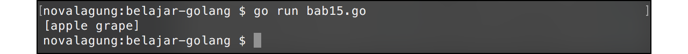
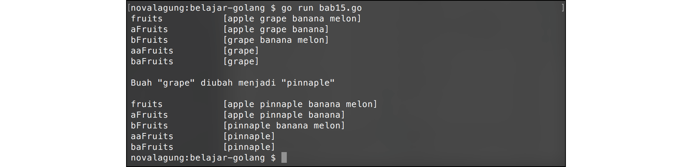

A.15. Slice
Slice adalah reference elemen array. Slice bisa dibuat, atau bisa juga dihasilkan dari manipulasi sebuah array ataupun slice lainnya. Karena merupakan data reference, menjadikan perubahan data di tiap elemen slice akan berdampak pada slice lain yang memiliki alamat memori yang sama.
A.15.1. Inisialisasi Slice
Cara pembuatan slice mirip seperti pembuatan array, bedanya tidak perlu mendefinisikan jumlah elemen ketika awal deklarasi. Pengaksesan nilai elemen-nya juga sama. Contoh pembuatan slice:
var fruits = []string{"apple", "grape", "banana", "melon"}
fmt.Println(fruits[0]) // "apple"
Salah satu perbedaan slice dan array bisa diketahui pada saat deklarasi variabel-nya, jika jumlah elemen tidak dituliskan, maka variabel tersebut adalah slice.
var fruitsA = []string{"apple", "grape"} // slice
var fruitsB = [2]string{"banana", "melon"} // array
var fruitsC = [...]string{"papaya", "grape"} // array
A.15.2. Hubungan Slice Dengan Array & Operasi Slice
Kalau perbedannya hanya di penentuan alokasi pada saat inisialisasi, kenapa tidak menggunakan satu istilah saja? atau adakah perbedaan lainnya?
Sebenarnya slice dan array tidak bisa dibedakan karena merupakan sebuah kesatuan. Array adalah kumpulan nilai atau elemen, sedang slice adalah referensi tiap elemen tersebut.
Slice bisa dibentuk dari array yang sudah didefinisikan, caranya dengan memanfaatkan teknik 2 index untuk mengambil elemen-nya. Contoh bisa dilihat pada kode berikut.
var fruits = []string{"apple", "grape", "banana", "melon"}
var newFruits = fruits[0:2]
fmt.Println(newFruits) // ["apple", "grape"]
Kode fruits[0:2] maksudnya adalah pengaksesan elemen dalam slice fruits yang dimulai dari indeks ke-0, hingga elemen sebelum indeks ke-2. Elemen yang memenuhi kriteria tersebut akan didapat, untuk kemudian disimpan pada variabel lain sebagai slice baru. Pada contoh di atas, newFruits adalah slice baru yang tercetak dari slice fruits, dengan isi 2 elemen, yaitu "apple" dan "grape".

Ketika mengakses elemen array menggunakan satu buah indeks (seperti data[2]), nilai yang didapat merupakan hasil copy dari referensi aslinya. Berbeda dengan pengaksesan elemen menggunakan 2 indeks (seperti data[0:2]), nilai yang didapat adalah reference elemen atau slice.
Tidak apa jikalau pembaca masih bingung, di bawah akan dijelaskan lebih mendetail lagi tentang slice dan reference
Tabel berikut adalah list operasi operasi menggunakan teknik 2 indeks yang bisa dilakukan.
var fruits = []string{"apple", "grape", "banana", "melon"}
| Kode | Output | Penjelasan |
|---|---|---|
fruits[0:2] |
[apple, grape] |
semua elemen mulai indeks ke-0, hingga sebelum indeks ke-2 |
fruits[0:4] |
[apple, grape, banana, melon] |
semua elemen mulai indeks ke-0, hingga sebelum indeks ke-4 |
fruits[0:0] |
[] |
menghasilkan slice kosong, karena tidak ada elemen sebelum indeks ke-0 |
fruits[4:4] |
[] |
menghasilkan slice kosong, karena tidak ada elemen yang dimulai dari indeks ke-4 |
fruits[4:0] |
[] |
error, pada penulisan fruits[a,b] nilai a harus lebih besar atau sama dengan b |
fruits[:] |
[apple, grape, banana, melon] |
semua elemen |
fruits[2:] |
[banana, melon] |
semua elemen mulai indeks ke-2 |
fruits[:2] |
[apple, grape] |
semua elemen hingga sebelum indeks ke-2 |
A.15.3. Slice Merupakan Tipe Data Reference
Slice merupakan tipe data reference atau referensi. Artinya jika ada slice baru yang terbentuk dari slice lama, maka data elemen slice yang baru akan memiliki alamat memori yang sama dengan elemen slice lama. Setiap perubahan yang terjadi di elemen slice baru, akan berdampak juga pada elemen slice lama yang memiliki referensi yang sama.
Program berikut merupakan pembuktian tentang teori yang baru kita bahas. Kita akan mencoba mengubah data elemen slice baru, yang terbentuk dari slice lama.
var fruits = []string{"apple", "grape", "banana", "melon"}
var aFruits = fruits[0:3]
var bFruits = fruits[1:4]
var aaFruits = aFruits[1:2]
var baFruits = bFruits[0:1]
fmt.Println(fruits) // [apple grape banana melon]
fmt.Println(aFruits) // [apple grape banana]
fmt.Println(bFruits) // [grape banana melon]
fmt.Println(aaFruits) // [grape]
fmt.Println(baFruits) // [grape]
// Buah "grape" diubah menjadi "pinnaple"
baFruits[0] = "pinnaple"
fmt.Println(fruits) // [apple pinnaple banana melon]
fmt.Println(aFruits) // [apple pinnaple banana]
fmt.Println(bFruits) // [pinnaple banana melon]
fmt.Println(aaFruits) // [pinnaple]
fmt.Println(baFruits) // [pinnaple]
Sekilas bisa kita lihat bahwa setelah slice yang isi datanya adalah grape di-ubah menjadi pinnaple, semua slice pada 4 variabel lainnya juga ikut berubah.
Variabel aFruits, bFruits merupakan slice baru yang terbentuk dari variabel fruits. Dengan menggunakan dua slice baru tersebut, diciptakan lagi slice lainnya, yaitu aaFruits, dan baFruits. Kelima slice tersebut ditampilkan nilainya.
Selanjutnya, nilai dari baFruits[0] diubah, dan 5 slice tadi ditampilkan lagi. Hasilnya akan ada banyak slice yang elemennya ikut berubah. Yaitu elemen-elemen yang referensi-nya sama dengan referensi elemen baFruits[0].

Bisa dilihat pada output di atas, elemen yang sebelumnya bernilai "grape" pada variabel fruits, aFruits, bFruits, aaFruits, dan baFruits; kesemuanya berubah menjadi "pinnaple", karena memiliki referensi yang sama.
Pembahasan mengenai dasar slice sepertinya sudah cukup, selanjutnya kita akan membahas tentang beberapa built in function bawaan Go, yang bisa dimanfaatkan untuk keperluan operasi slice.
A.15.4. Fungsi len()
Fungsi len() digunakan untuk menghitung jumlah elemen slice yang ada. Sebagai contoh jika sebuah variabel adalah slice dengan data 4 buah, maka fungsi ini pada variabel tersebut akan mengembalikan angka 4.
var fruits = []string{"apple", "grape", "banana", "melon"}
fmt.Println(len(fruits)) // 4
A.15.5. Fungsi cap()
Fungsi cap() digunakan untuk menghitung lebar atau kapasitas maksimum slice. Nilai kembalian fungsi ini untuk slice yang baru dibuat pasti sama dengan len, tapi bisa berubah seiring operasi slice yang dilakukan. Agar lebih jelas, silakan disimak kode berikut.
var fruits = []string{"apple", "grape", "banana", "melon"}
fmt.Println(len(fruits)) // len: 4
fmt.Println(cap(fruits)) // cap: 4
var aFruits = fruits[0:3]
fmt.Println(len(aFruits)) // len: 3
fmt.Println(cap(aFruits)) // cap: 4
var bFruits = fruits[1:4]
fmt.Println(len(bFruits)) // len: 3
fmt.Println(cap(bFruits)) // cap: 3
Variabel fruits disiapkan di awal dengan jumlah elemen 4, fungsi len(fruits) dan cap(fruits) pasti hasinya 4.
Variabel aFruits dan bFruits merupakan slice baru berisikan 3 buah elemen milik slice fruits. Variabel aFruits mengambil elemen index 0, 1, 2; sedangkan bFruits 1, 2, 3.
Fungsi len() menghasilkan angka 3, karena jumlah elemen kedua slice ini adalah 3. Tetapi cap(aFruits) menghasilkan angka yang berbeda, yaitu 4 untuk aFruits dan 3 untuk bFruits. kenapa? jawabannya bisa dilihat pada tabel berikut.
| Kode | Output | len() |
cap() |
|---|---|---|---|
fruits[0:4] |
[buah buah buah buah] |
4 | 4 |
aFruits[0:3] |
[buah buah buah ----] |
3 | 4 |
bFruits[1:3] |
---- [buah buah buah] |
3 | 3 |
Kita analogikan slicing 2 index menggunakan x dan y.
fruits[x:y]
Slicing yang dimulai dari indeks 0 hingga y akan mengembalikan elemen-elemen mulai indeks 0 hingga sebelum indeks y, dengan lebar kapasitas adalah sama dengan slice aslinya.
Sedangkan slicing yang dimulai dari indeks x, yang dimana nilai x adalah lebih dari 0, membuat elemen ke-x slice yang diambil menjadi elemen ke-0 slice baru. Hal inilah yang membuat kapasitas slice berubah.
A.15.6. Fungsi append()
Fungsi append() digunakan untuk menambahkan elemen pada slice. Elemen baru tersebut diposisikan setelah indeks paling akhir. Nilai balik fungsi ini adalah slice yang sudah ditambahkan nilai barunya. Contoh penggunaannya bisa dilihat di kode berikut.
var fruits = []string{"apple", "grape", "banana"}
var cFruits = append(fruits, "papaya")
fmt.Println(fruits) // ["apple", "grape", "banana"]
fmt.Println(cFruits) // ["apple", "grape", "banana", "papaya"]
Ada 3 hal yang perlu diketahui dalam penggunaan fungsi ini.
- Ketika jumlah elemen dan lebar kapasitas adalah sama (
len(fruits) == cap(fruits)), maka elemen baru hasilappend()merupakan referensi baru. - Ketika jumlah elemen lebih kecil dibanding kapasitas (
len(fruits) < cap(fruits)), elemen baru tersebut ditempatkan kedalam cakupan kapasitas, menjadikan semua elemen slice lain yang referensi-nya sama akan berubah nilainya.
Agar lebih jelas silakan perhatikan contoh berikut.
var fruits = []string{"apple", "grape", "banana"}
var bFruits = fruits[0:2]
fmt.Println(cap(bFruits)) // 3
fmt.Println(len(bFruits)) // 2
fmt.Println(fruits) // ["apple", "grape", "banana"]
fmt.Println(bFruits) // ["apple", "grape"]
var cFruits = append(bFruits, "papaya")
fmt.Println(fruits) // ["apple", "grape", "papaya"]
fmt.Println(bFruits) // ["apple", "grape"]
fmt.Println(cFruits) // ["apple", "grape", "papaya"]
Pada contoh di atas bisa dilihat, elemen indeks ke-2 slice fruits nilainya berubah setelah ada penggunaan keyword append() pada bFruits. Slice bFruits kapasitasnya adalah 3 sedang jumlah datanya hanya 2. Karena len(bFruits) < cap(bFruits), maka elemen baru yang dihasilkan, terdeteksi sebagai perubahan nilai pada referensi yang lama (referensi elemen indeks ke-2 slice fruits), membuat elemen yang referensinya sama, nilainya berubah.
A.15.7. Fungsi copy()
Fungsi copy() digunakan untuk men-copy elements slice pada src (parameter ke-2), ke dst (parameter pertama).
copy(dst, src)
Jumlah element yang di-copy dari src adalah sejumlah lebar slice dst (atau len(dst)). Jika jumlah slice pada src lebih kecil dari dst, maka akan ter-copy semua. Lebih jelasnya silakan perhatikan contoh berikut.
dst := make([]string, 3)
src := []string{"watermelon", "pinnaple", "apple", "orange"}
n := copy(dst, src)
fmt.Println(dst) // watermelon pinnaple apple
fmt.Println(src) // watermelon pinnaple apple orange
fmt.Println(n) // 3
Pada kode di atas variabel slice dst dipersiapkan dengan lebar adalah 3 elements. Slice src yang isinya 4 elements, di-copy ke dst. Menjadikan isi slice dst sekarang adalah 3 buah elements yang sama dengan 3 buah elements src, hasil dari operasi copy().
Yang ter-copy hanya 3 buah (meski src memiliki 4 elements) hal ini karena copy() hanya meng-copy elements sebanyak len(dst).
Fungsi
copy()mengembalikan informasi angka, representasi dari jumlah element yang berhasil di-copy.
Pada contoh kedua berikut, dst merupakan slice yang sudah ada isinya, 3 buah elements. Variabel src yang juga merupakan slice dengan isi dua elements, di-copy ke dst. Karena operasi copy() akan meng-copy sejumlah len(dst), maka semua elements src akan ter-copy karena jumlahnya dibawah atau sama dengan lebar dst.
dst := []string{"potato", "potato", "potato"}
src := []string{"watermelon", "pinnaple"}
n := copy(dst, src)
fmt.Println(dst) // watermelon pinnaple potato
fmt.Println(src) // watermelon pinnaple
fmt.Println(n) // 2
Jika dilihat pada kode di atas, isi dst masih tetap 3 elements, tapi dua elements pertama adalah sama dengan src. Element terakhir dst isinya tidak berubah, tetap potato, hal ini karena proses copy hanya memutasi element ke-1 dan ke-2 milik dst, karena memang pada src hanya dua itu elements-nya.
A.15.8. Pengaksesan Elemen Slice Dengan 3 Indeks
3 index adalah teknik slicing elemen yang sekaligus menentukan kapasitasnya. Cara menggunakannnya yaitu dengan menyisipkan angka kapasitas di belakang, seperti fruits[0:1:1]. Angka kapasitas yang diisikan tidak boleh melebihi kapasitas slice yang akan di slicing.
Berikut merupakan contoh penerapannya.
var fruits = []string{"apple", "grape", "banana"}
var aFruits = fruits[0:2]
var bFruits = fruits[0:2:2]
fmt.Println(fruits) // ["apple", "grape", "banana"]
fmt.Println(len(fruits)) // len: 3
fmt.Println(cap(fruits)) // cap: 3
fmt.Println(aFruits) // ["apple", "grape"]
fmt.Println(len(aFruits)) // len: 2
fmt.Println(cap(aFruits)) // cap: 3
fmt.Println(bFruits) // ["apple", "grape"]
fmt.Println(len(bFruits)) // len: 2
fmt.Println(cap(bFruits)) // cap: 2